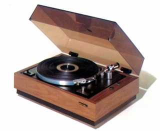
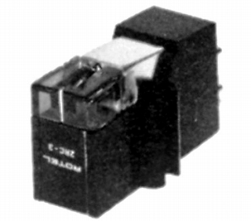
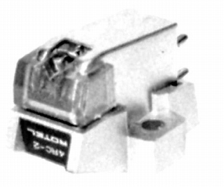
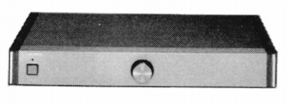
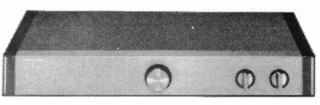

ROTEL （ローテル）
ローテル商事扱いのオーディオブランド。かつてはローランド電子という社名であったが、電子楽器等のローランドとは無関係。秋葉原駅の電気街口のラジオ会館1F丸山無線に展示されているため、ブランド名や製品を目にした方も多いと思う。生産・開発の拠点は海外にあり、ヨーロッパ（イギリス？）風のシンプルなデザインの製品を作っている。

(RP-1000 1973年頃のカタログより 1981年頃にはプレイヤーからは撤退したようだ）1970年代からスピーカーやアンプと共に、アナログディスクプレイヤーも手がけていたブランドであり、管理人の手元にある資料ではカートリッジ2種が確認できた。極めてリーズナブルな機種と4チャンネル対応のもの。また1990年代には、フォノイコライザーを発表している。
�T.カートリッジ
2RC-3

■価格 \3,800
■発電方式 MM型
■出力電圧 3.4〜5.5mV
■針圧 2.0〜4.0g
■再生周波数帯域 20-28,000Hz
■負荷抵抗 30〜100kΩ
■自重 6.5g
■交換針 RN-3
■発売
1976〜77年頃
■販売終了 1979年頃
■備考 価格は1977年頃のもの。
同社のプレイヤーRP-1500などに使われたカートリッジを、
単品販売したもののようだ。
なお1977年頃からはプレイヤー用のカートリッジは、
VM型（テクニカ製？）の2RC-5というモデルになった。
4RC-2

■価格 \28,000
■発電方式 MM型
■出力電圧 2mV
■針圧
■再生周波数帯域 10-45,000Hz
■チャンネルセパレーション 30dB(1kHz)
20dB(30kHz)
■チャンネルバランス ±1dB
■針先 シバタ針
■自重
■交換針
■発売
1977年頃
■販売終了
■備考 COMPONENTS LINE-UP
1976-77に記載。
4チャンネルステレオ対応機か？
�U.フォノ・イコライザー
RHQ10

■価格 \250,000
■発電方式
フォノイコライザーアンプ
■入力レベル MM 2.5mV/47kΩ
MC 0.03mV/100Ω
■ＳＮ比 MM 90dB、MC
75dB
■電源 AC100V 50/60Hz
■重量 6.8kg
■寸法 W47.0×H7.6×D33.2�p
■発売
1991年7月
■販売終了 1996〜98年頃
■備考 価格は1991年頃のもの
アンチネッターは左右独立連続可変型。
同社のパッシブコントロールRHC10と共通のデザイン。

(ＲＨＣ10)